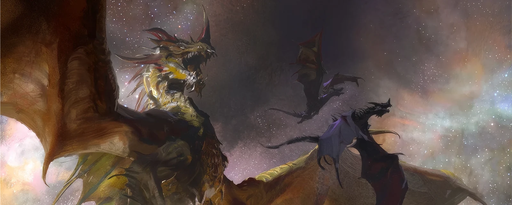
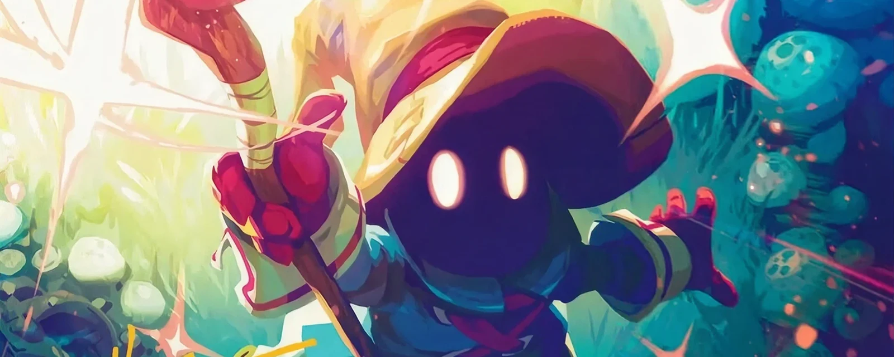
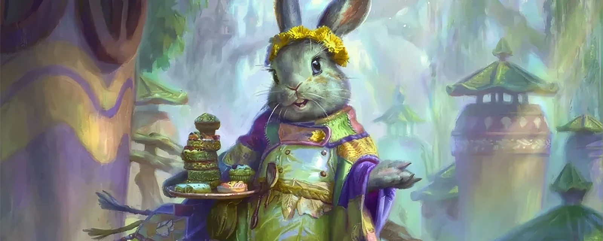

Commander
Cos'è il Commander?
Questo formato affascinante e amatissimo si basa su una regola fondamentale: scegliere una creatura leggendaria (o un planeswalker autorizzato) che guidi il tuo mazzo nei panni del tuo "Comandante". Nato come variante amatoriale, è diventato il formato multiplayer per eccellenza, offrendo partite epiche dove la diplomazia, le alleanze e la strategia al tavolo contano tanto quanto le carte che giochi.
 100
100
 2-4
2-4
 40-60 min
40-60 min
Costruzione del Mazzo
A differenza dei formati classici, il tuo mazzo dovrà essere composto da esattamente 100 carte, includendo il tuo Comandante. La particolarità assoluta è la regola del "Singleton": fatta eccezione per le terre base, potrai inserire una sola copia di ogni singola carta. Inoltre, ogni carta presente nel mazzo deve rispettare rigorosamente l'"Identità di Colore" del tuo Comandante. Non c'è sideboard e, come sempre, ricordati di consultare la lista ufficiale delle carte bandite (la banlist del Commander) per assicurarti che il tuo mazzo sia legale!

Perché Scegliere il Commander?
Il Commander ha conquistato una grossa fetta della community grazie a tre pilastri fondamentali:
- Esperienza Sociale e Multiplayer: Essendo pensato principalmente per tavoli da quattro giocatori, crea una dinamica di gioco unica, fatta di contrattazioni, alleanze temporanee e colpi di scena. È il formato perfetto per passare una serata all'insegna del divertimento tra amici.
- Espressione Personale (Singleton): Avere 99 carte tutte diverse ti costringe a cercare sinergie uniche e ti permette di personalizzare il mazzo fino al minimo dettaglio. Il tuo mazzo racconterà una storia e rifletterà perfettamente il tuo stile o il tuo amore per la lore di Magic.
- Nessuna Rotazione: Trattandosi di un formato Eternal, le tue carte non "scadranno" mai. Che provengano dalle primissime espansioni degli anni '90 o dalle ultime uscite, potrai mescolarle insieme e usare il tuo mazzo preferito per anni.

Archetipi Storici
Nonostante la natura imprevedibile delle partite a 100 carte, il metagame del Commander esprime macro-strategie molto definite e amate dai giocatori. Ecco alcuni degli stili di gioco più iconici:
L'Ur-Drago (Pentacolore - Tribal): Il re indiscusso dei mazzi focalizzati su un singolo tipo di creatura. L'obiettivo è semplice quanto devastante: sfruttare la sua abilità Eminenza per scontare il costo di tutti i tuoi draghi fin dal primo turno, riempiendo il campo di battaglia di bestie colossali pronte a incenerire le difese avversarie.

Vivi Ornitier (Blu/Rosso - Spellslinger):Un mazzo esplosivo incentrato sul lancio continuo di istantanei e stregonerie. Il celebre Mago Nero cresce di potenza e infligge danni costanti ogni volta che giochi una magia, per poi convertire la sua forza in un'enorme ondata di mana con cui scatenare letali tempeste magiche in un solo turno.

Ms. Bumbleflower (Verde/Bianco/Blu - Group Hug): Un mazzo politico e apparentemente innocuo. Usa la strategia del dono per regalare carte e vantaggi agli avversari, stringendo alleanze preziose. Nel frattempo, però, ingigantisce in segreto le proprie creature con piogge di segnalini +1/+1, pronta a schiacciare l'intero tavolo quando nessuno se lo aspetta.

Pronto a scendere in campo?
Questo formato dimostra perfettamente che Magic è prima di tutto un'esperienza di condivisione e divertimento in compagnia. Che tu voglia costruire un mazzo altamente competitivo o preferisca goderti una partita rilassata per il puro gusto di giocare le tue carte preferite, scegli il tuo eroe leggendario, raduna i tuoi amici e preparati a vivere le battaglie più epiche del Multiverso!